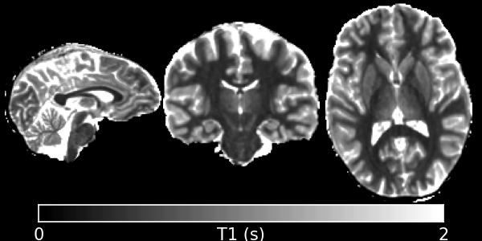
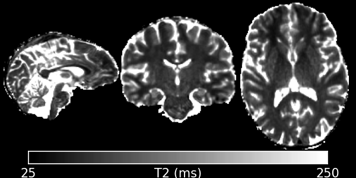
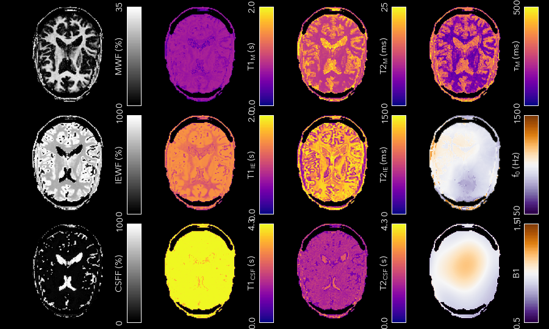

Relaxometry¶
Relaxometry is the measurement of the longitudinal and transverse relaxation times T<sub>1</sub> and T<sub>2</sub>. There are a multitude of different techniques for measuring both. The main focus of QUIT has been on the Driven-Equilibrium Single-Pulse Observation of T<sub>1</sub> (DESPOT1) family of techniques, but the classic multi-echo T<sub>2</sub> method and the more recent MP2RAGE T<sub>1</sub> measurement method are also implemented, along with the AFI and DREAM B1 mapping methods.
The following programs are available:
qidespot1¶
This program implements the classic Driven Equilibrium Single-Pulse Observation of T1 (DESPOT1) algorithm, also known as the Variable Flip-Angle (VFA) method in the literature. This is a fast way to measure longitudinal relaxation using a spoiled steady-state sequence, which is know by a different name by every scanner manufacturer just to be helpful. On GE, it’s SPoiled Gradient Recalled echo (SPGR), on Siemens it’s Fast Low-Angle SHot (FLASH) and on Phillips the sequence is Fast Field Echo (FFE).
Example Command Line
qidespot1 input_file.nii.gz --mask=mask_file.nii.gz --B1=b1_file.nii.gz < input.json
Example Command Line
{
"SPGR": {
"TR": 0.01,
"FA": [3, 18]
}
}
Outputs
D1_T1.nii.gz- The T1 map. Units are the same as those used for TR in the input.D1_PD.nii.gz- The apparent Proton Density map. No units.
Important Options
--B1, -bSpecify an effective flip-angle or B1 map. This must be expressed as a fraction, e.g. a value of 1 in a voxel implies the nominal flip-angle was achieved.
--algo, -aThis specifies which precise algorithm to use. There are 3 choices, classic linear least-squares (l), weighted linear least-squares (w), and non-linear least-squares (n). If you only have 2 flip-angles then LLS is the only meaningful choice. The other 2 choices should produce better (less noisy, more accurate) T1 maps when you have more input flip-angles. WLLS is faster than NLLS for the same number of iterations. However, modern processors are sufficiently powerful that the difference is bearable. Hence NLLS is recommended for the highest possible quality.
References
qidespot1hifi¶
This is an extension of DESPOT1 to fit a map simultaneously using an MP-RAGE / IR-SPGR type sequence. Although DESPOT1-HIFI can produce a rough estimate of B1, it often fails to produce reasonable values in the ventricles, and the fact that the MP-RAGE image is often acquired at lower resolution than the SPGR/FLASH data can also cause problems. Hence you should either smooth the B1 map produced as output, or fit it with a polynomial (Utilities), then recalculate T1 using the qidespot1 program. Note that if your MP-RAGE image is not acquired at the same resolution as your SPGR data, it must be resampled to the same spacing before processing (and it should also be registered to your SPGR data).
Example Command Line
qidespot1hifi spgr_file.nii.gz irspgr_file.nii.gz --mask=mask_file.nii.gz < input.json
Example Command Line
{
"SPGR": {
"TR": 0.01,
"FA": [3, 18]
},
"MPRAGE": {
"FA": 5,
"TR": 0.01,
"TI": 0.45,
"TD": 0,
"eta": 1,
"ETL": 64,
"k0": 0
}
}
For the MPRAGE sequence, the TR is the spacing between readouts/echoes, not the overall segment TR. TI is the Inversion Time, and TD is the Delay Time after the echo-train (often 0). Eta is the Inversion Efficiency, which should be set to 1. ETL is the Echo-Train Length - usually the number of phase encode steps in one segment. k0 defines the position in the echo-train that the center line of k-space is acquired. This is 0 for centric acquisition and ETL/2 for linear.
Outputs
HIFI_T1.nii.gz- The T1 map. Units are the same as those used for TR in the input.HIFI_PD.nii.gz- The apparent Proton Density map. No units.HIFI_B1.nii.gz- The relative flip-angle map.
References
qidespot2¶
DESPOT2 uses SSFP data and a separate T1 map to calculate T2, using the same maths as DESPOT1. It does not account for the banding artefacts present in SSFP data at field-strengths of 3T and above. See qidespot2fm for a method that does account for them, or if you have at least 4 phase-increments and complex data then see SSFP for a way to remove them before using this program.
Example Command Line
qidespot2 t1_map.nii.gz input_file.nii.gz --mask=mask_file.nii.gz --B1=b1_file.nii.gz < input.json
Example Command Line
{
"SSFP": {
"TR": 0.005,
"PhaseInc": [180],
"FA": [12, 60]
}
}
Both PhaseInc and FA are measured in degrees. If the ellipse option is specified, then the sequence type must be SSFPGS, which does not require a PhaseInc. The units of TR must match the input T1 map.
Outputs
D2_T2.nii.gz- The T2 map. Units are the same as those used for TR in the input.D2_PD.nii.gz- The apparent Proton Density map. No units. Will be corrected for T2 decay at the echo time.
Important Options
--B1, -bSpecify an effective flip-angle or B1 map. This must be expressed as a fraction, e.g. a value of 1 in a voxel implies the nominal flip-angle was achieved.
--algo, -aThis specifies which precise algorithm to use. There are 3 choices, classic linear least-squares (l), weighted linear least-squares (w), and non-linear least-squares (n). If you only have 2 flip-angles then LLS is the only meaningful choice. The other 2 choices should produce better (less noisy, more accurate) T1 maps when you have more input flip-angles. WLLS is faster than NLLS for the same number of iterations. However, modern processors are sufficiently powerful that the difference is bearable. Hence NLLS is recommended for the highest possible quality.
--ellipse, -eThis specifies that the input data is the SSFP Ellipse Geometric Solution, i.e. that multiple phase-increment data has already been combined to produce band free images.
References
qidespot2fm¶
DESPOT2-FM uses SSFP data with mulitple phase-increments (also called phase-cycles or phase-cycling patterns) to produce T2 maps without banding artefacts.
Example Command Line
qidespot2fm t1_map.nii.gz input_file.nii.gz --mask=mask_file.nii.gz --B1=b1_file.nii.gz < input.json
The input file should contain all SSFP images concatenated together as a 4D file. The preferred ordering is flip-angle, then phase-increment (i.e. all flip-angles at one phase-increment, then all flip-angles at the next phase-increment).
Example Command Line
{
"SSFP": {
"TR": 0.005,
"PhaseInc": [180, 180, 0, 0],
"FA": [12, 60, 12, 60]
}
}
Both PhaseInc and FA are measured in degrees. The length of PhaseInc and FA must match.
Outputs
FM_T2.nii.gz- The T2 map. Units are the same as those used for TR in the input.FM_PD.nii.gz- The apparent Proton Density map. No units. Will be corrected for T2 decay at the echo time.
Important Options
--B1, -bSpecify an effective flip-angle or B1 map. This must be expressed as a fraction, e.g. a value of 1 in a voxel implies the nominal flip-angle was achieved.
--asym, -AWith the commonly used phase-increments of 180 and 0 degrees, due to symmetries in the SSFP magnitude profile, it is not possible to distinguish positive and negative off-resonance. Hence by default
qidespot2fmonly tries to fit for positive off-resonance frequences. If you acquire most phase-increments, e.g. 180, 0, 90 & 270, then add this switch to fit both negative and positive off-resonance frequencies.
References
qimcdespot¶
Multi-component DESPOT aims to separate SPGR and SSFP signals into multiple discrete pools with different T<sub>1</sub> and T<sub>2</sub>. In the brain, the pool with shorter values is attributed to myelin water, while pools with longer values can be either intra/extra-cellular water or CSF.
It is recommended to have an off-resonance map to stabilise the fitting. This can be generated by using qidespot1 and then qidespot2fm above. A B1 map is also essential for good results.
Example Command Line
qimcdespot spgr_file.nii.gz ssfp_file.nii.gz --mask=mask_file.nii.gz --B1=b1_file.nii.gz --f0=f0_file.nii.gz --scale < input.json
The SSFP input file should contain all SSFP images concatenated together as a 4D file (see qidespot2fm above).
Example Command Line
{
"Sequences": [
{
"SPGR": {
"TR": 0.01,
"FA": [3,4,5,7,9,12,15,18]
}
},
{
"SSFP": {
"TR": 0.05,
"FA": [12,16,20,24,30,40,50,60,12,16,20,24,30,40,50,60],
"PhaseInc": [180,180,180,180,180,180,180,180,0,0,0,0,0,0,0,0]
}
}
]
}
The order that the sequences are listed must match the order the input files are specified on the command-line.
Outputs
Note - the output prefix will change depending on the model selected (see below). The outputs listed here are for the 3 component model.
3C_T1_m.nii.gz- T1 of myelin water3C_T2_m.nii.gz- T2 of myelin water3C_T1_ie.nii.gz- T1 of intra/extra-cellular water3C_T2_ie.nii.gz- T2 of intra/extra-cellular water3C_T1_csf.nii.gz- T1 of CSF3C_T2_csf.nii.gz- T2 of CSF3C_tau_m.nii.gz- The residence time of myelin water (reciprocal of forward exchange rate)3C_f_m.nii.gz- The Myelin Water Fraction (MWF)3C_f_csf.nii.gz- The CSF Fraction3C_f0.nii.gz- The off-resonance frequency. If this was specified on the command line, it will be a copy of that file3C_B1.nii.gz- The relative flip-angle map. If this was specified on the command line, it will be a copy of that file
The intra/extra-cellular water fraction is not output, as it is not a free parameter (only 2 of the 3 pool fractions are required for the calculations). It is easy to calculate this post-hoc by subtracting the MWF and CSFF from 1.
Important Options
--algo, -a- S - Stochastic Region Contraction
- G - Gaussian Region Contraction
Gaussian is recommended.
--tesla, -tSpecify the field-strength so sensible fitting ranges can be used. Currently only ranges for (3) and (7)T are defined. If you wish to specify your own ranges, set this option as (u) and then the ranges will be read from your input file.
--model, -m- 1 - 1 component model (no fractions, just a single T1/T2)
- 2 - 2 component model. Myelin and intra/extra-cellular water
- 2nex - 2 component model without exchange
- 3 - 3 component model. Myelin water, IE water & CSF
- 3nex - 3 component model without exchange
- 3f0 - 3 component model, allow an additional off-resonance offset between myelin and IE water pools
References
qimp2rage¶
MP2RAGE adds a second inversion time to the standard T1w MPRAGE sequence. Combining the (complex) images with the expression \(S_1 S_2^*/(|S_1^2 + S_2^2|)\) produces a real-valued image that is corrected for receive coil (B1-) inhomogeneity. In addition, if the two inversion times are carefully selected, a one-to-one mapping exists between the values in that image and T1, which is also robust to transmit (B1+) inhomogeneity. Finally, as the two images are implicitly registered, this method has several advantages over DESPOT1.
Example Command Line
qimp2rage input_file.nii.gz --mask=mask_file.nii.gz < input.json
The input file must be complex-valued.
Example Command Line
{
"MP2RAGE" : {
"TR" : 0.006,
"SegTR" : 5,
"TI" : [0.9, 2],
"ETL": 128,
"FA": [6, 8]
}
}
TR is the readout or echo-train repetition time, while SegTR is the segment or overall TR. ETL is the echo-train length or number of readouts in one segment.
Outputs
{input}_contrast.nii.gz- The MP2 contrast image. The range of this image is -0.5 to 0.5.{input}_T1.nii.gz- The T1 map. Units are the same as TR and SegTR.
Important Options
--beta, -bRegularisation factor for robust contrast calculation (see references). It is recommended to experiment with this parameter to manually find an optimum value, which should then be kept constant for an entire dataset.
References
qimultiecho¶
Classic monoexponential decay fitting. Can be used to fit either T2 or T2*.
Example Command Line
qimultiecho input_file.nii.gz --algo=a < input.json
Example Command Line
For regularly spaced echoes:
{
"MultiEcho" : {
"TR" : 2.5,
"TE1" : 0.005,
"ESP" : 0.005,
"ETL" : 16
}
}
TE1 is the first echo-time, ESP is the subsequent echo-spacing, ETL is the echo-train length.
For irregularly spaced echoes:
{
"MultiEchoFlex" : {
"TR" : 2.5,
"TE" : [0.005, 0.01, 0.03, 0.05]
}
}
Note
The current implementation of the ARLO method will only work with regularly spaced echoes
Outputs
ME_T2.nii.gz- The T2 map. Units are the same as TE1 and ESP.ME_PD.nii.gz- The apparent proton-density map (intercept of the decay curve at TE=0)
Important Options
--algo, -a- l - Standard log-linear fitting
- a - ARLO (see reference below)
- n - Non-linear fitting
References
qiafi¶
Calculates a relative flip-angle (B1) map using the Actual Flip-angle Imaging method.
Example Command Line
qiafi input_file.nii.gz
Does not read any input from stdin. The input file should contain two volumes, corresponding to TR1 and TR2.
Outputs
AFI_B1.nii.gz- The relative flip-angle map.
Important Options
--flip, -fThe nominal flip-angle that should have been achieved, default 55 degrees.
--ratio, -rThe ratio of TR2 to TR1, default 5.
--save, -sOutput AFI_angle.nii.gz, the actual achieved angle in each voxel.
References
qidream¶
Calculates a relative flip-angle (B1) map using the DREAM method.
Example Command Line
qidream input_file.nii.gz
Does not read any input from stdin. The input file should contain two volumes, the FID and stimulated echo (STE).
Outputs
DREAM_B1.nii.gz- The relative flip-angle map.DREAM_angle.nii.gz- The actual achieved angle in each voxel.
Important Options
--alpha, -aThe nominal flip-angle that should have been achieved, default 55 degrees.
--order, -O- f - FID is the first volume, STE is second
- s - STE is the first volume, FID is second
- v - VST (Virtual Stimulated Echo) is the first volume, FID is second
References